187 objetivo-personal intentar en lo posible no ser tan hambrientos uo por lo menos no exterminar gente pobre inocente ya hay varios proyectos de viviendas sin exterminar pobres y reubicar gente en otros países sin tener que exterminar gente por ser pobres sin ganancias
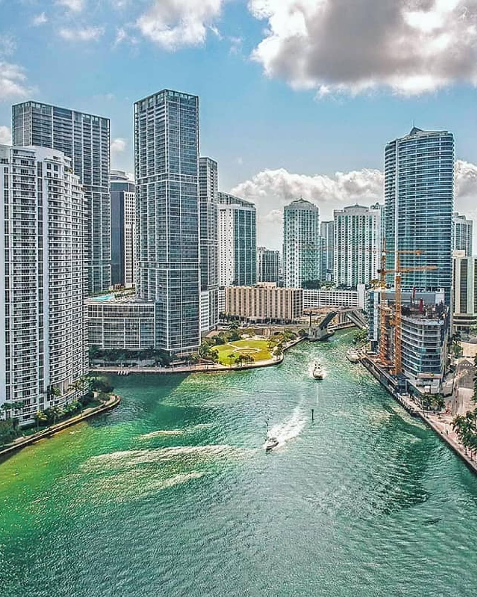
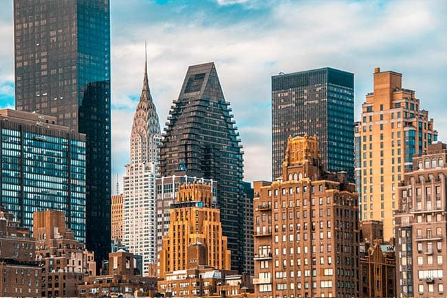
 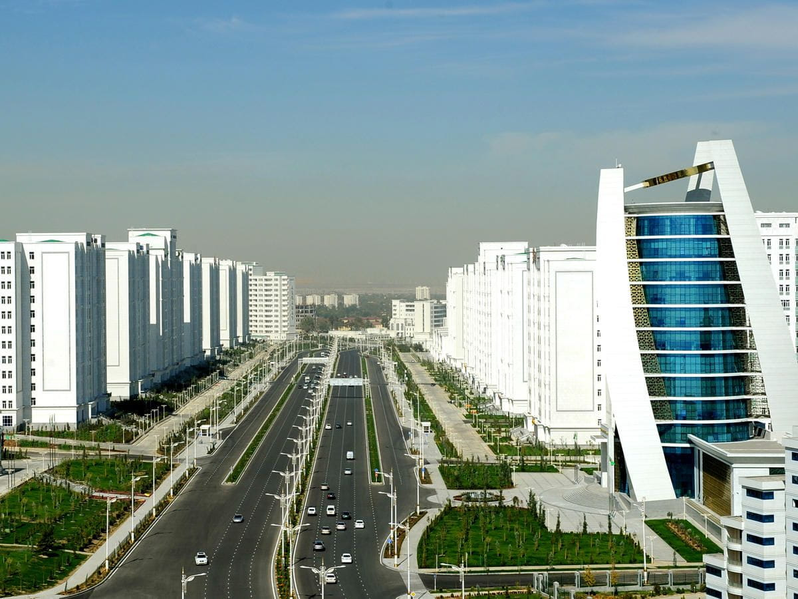
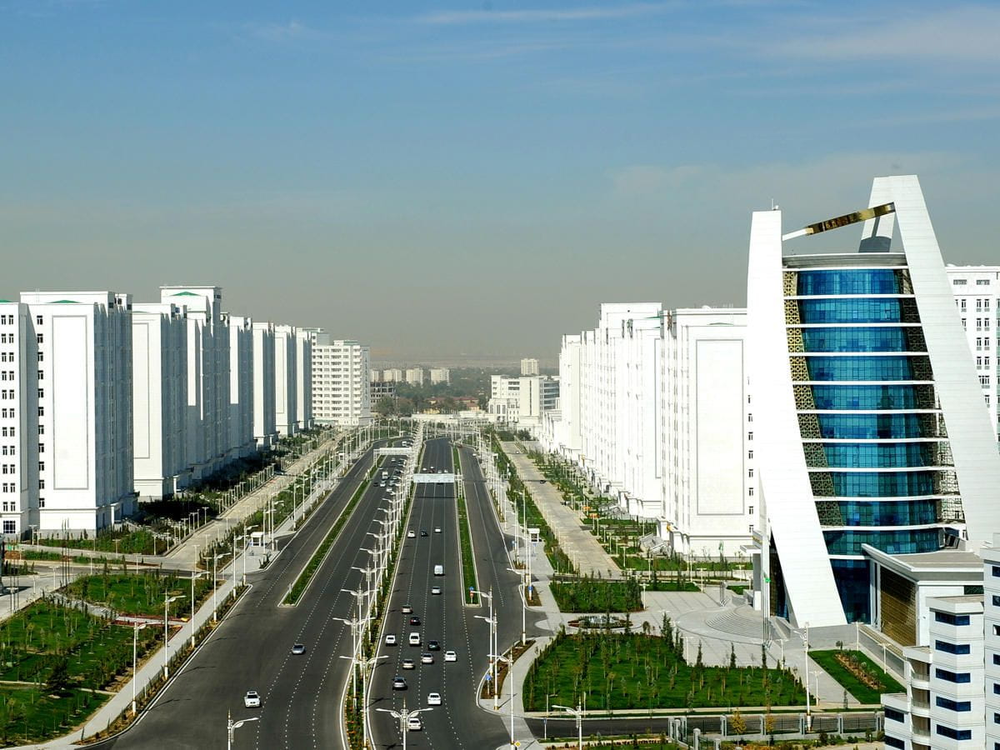

 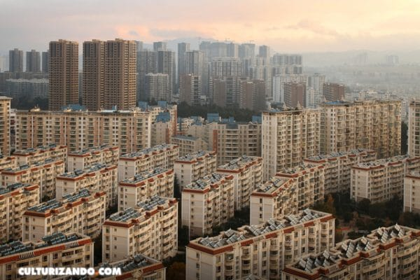
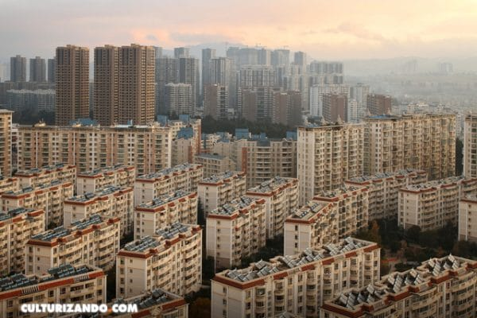


 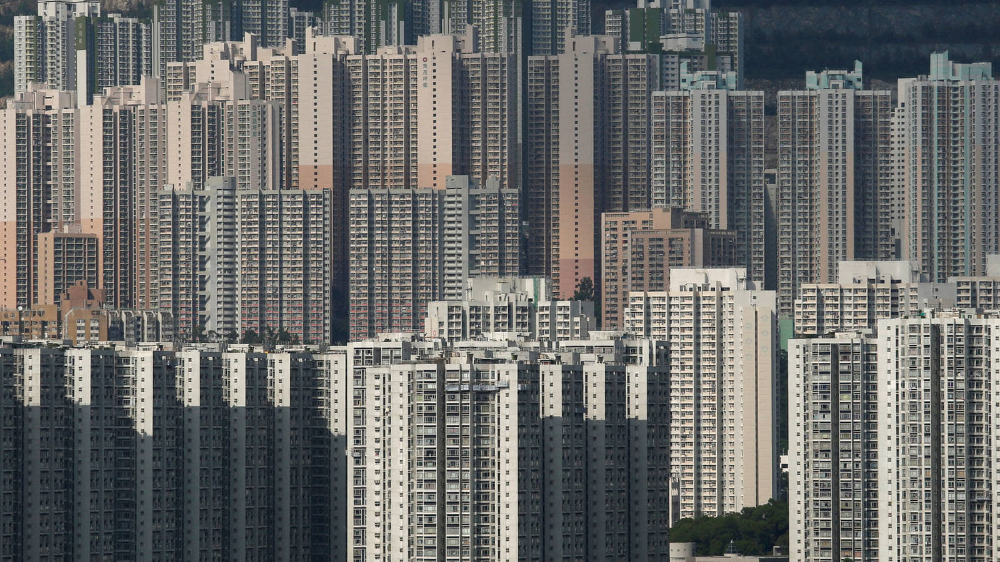
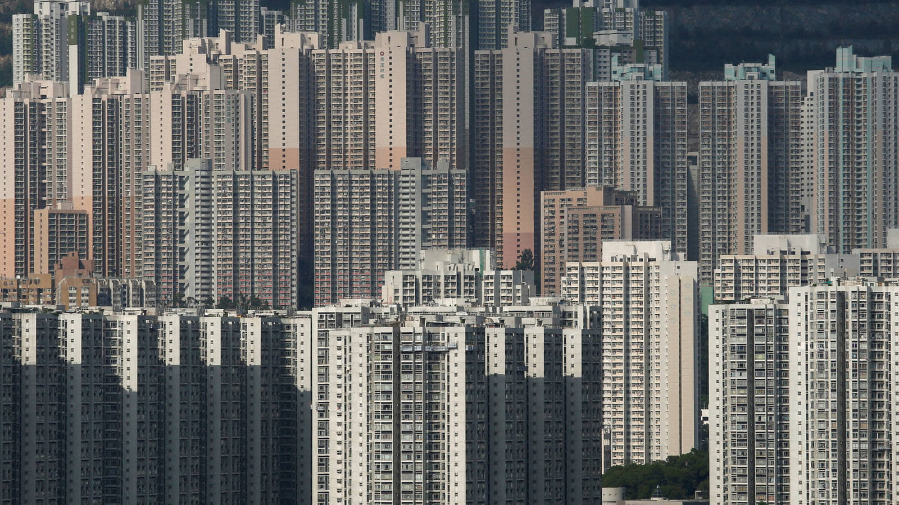
 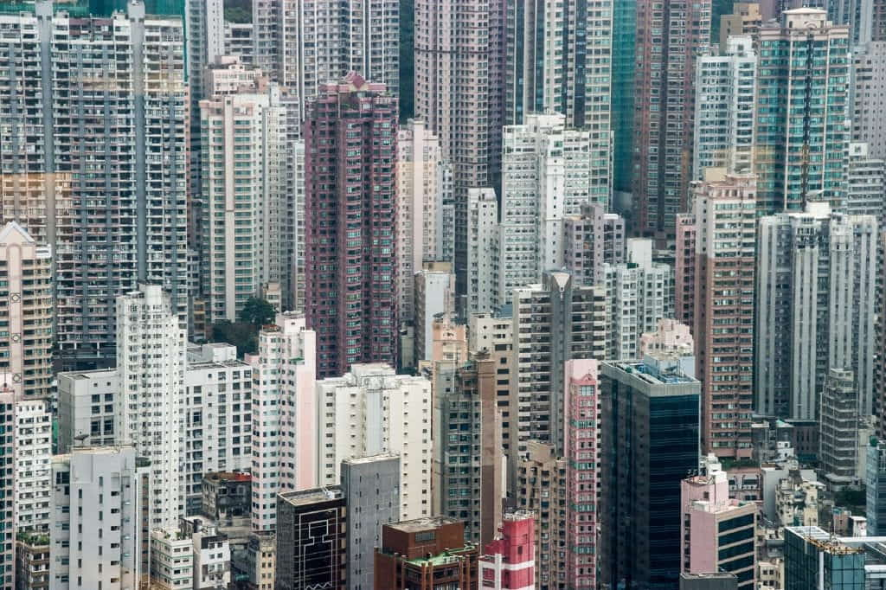
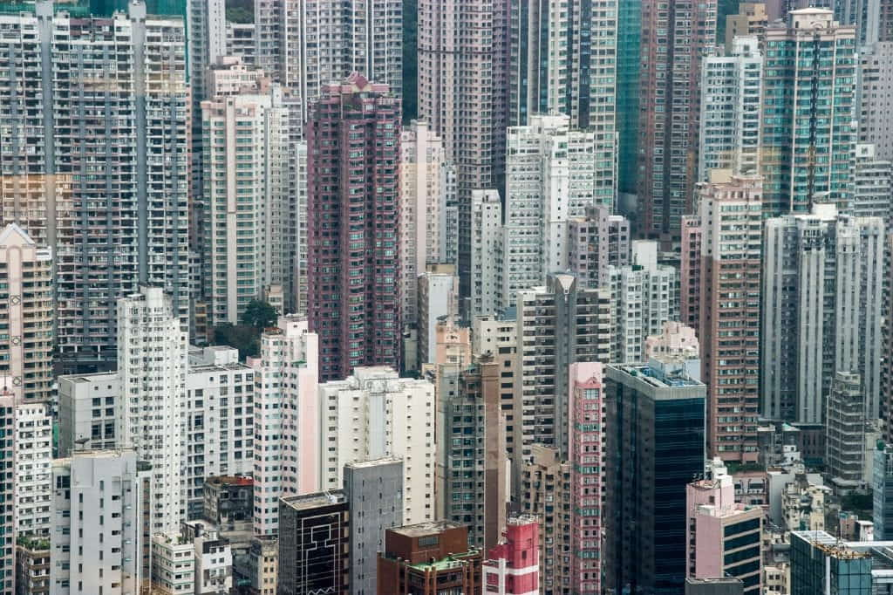
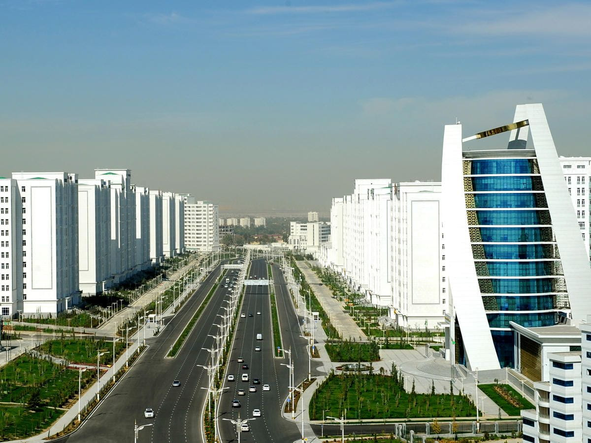
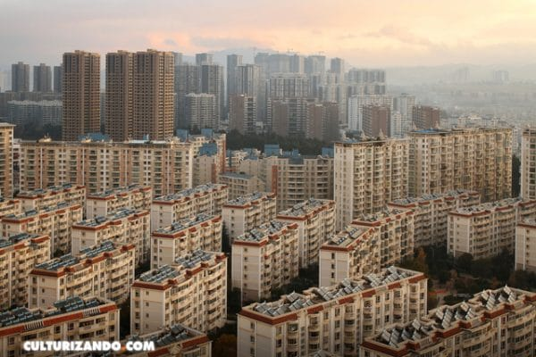
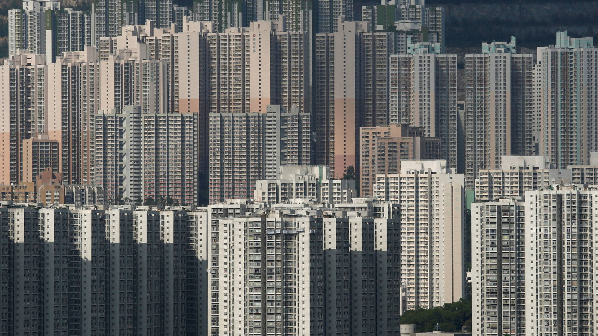
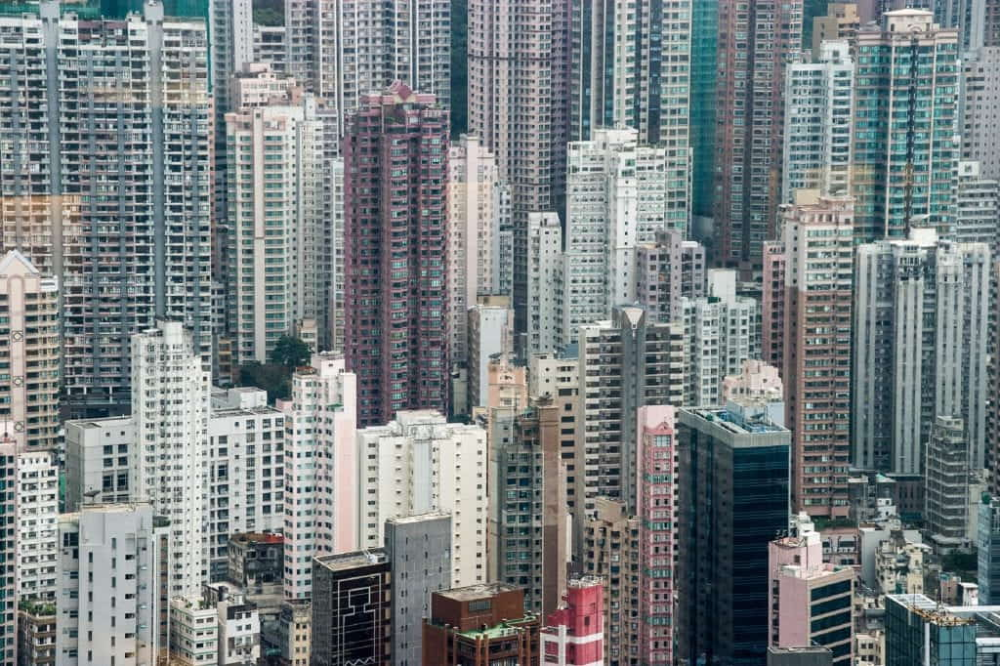